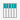

| Explore the Data Catalog | |
The data catalog is where users can find datasets, lenses, and segments that have been created in Platfora. This topic answers some frequently asked questions about the data catalog.
There isn't one place in the data catalog where you can see how all of the datasets are related to each other. You can however, open a particular dataset to see its relationships to other datasets in the data catalog.
The dataset details page shows the Referenced Datasets that the current dataset is pointing to.
If a dataset is the target of an incoming reference, it is considered a dimension dataset. Dimension datasets show both upstream and downstream relationships on their dataset detail page, whereas fact datasets only show downstream relationships (or no relationships at all). Dimension datasets may also have segments or events created from them.
If you are browsing the data catalog and see datasets or lenses that are grayed-out and locked, this means that you do not have sufficient data access permissions to see the data in that dataset or lens. Contact your Platfora system administrator to ask if you can have access to the data.
This means that the dataset is a derived dataset. A derived dataset is defined from a viz (or lens query) in Platfora, whereas a regular dataset  is defined from a data source outside of Platfora.
A static derived dataset takes a snapshot of the viz data at a point in time - the data does not change if the parent lens is updated. A dynamic derived dataset does not save the actual viz data, but instead saves the lens query used to produce the data - the data is dynamically updated whenever the parent lens is updated.
Even though you may work with certain datasets and lenses on a regular basis, they won't show in the My Datasets or My Lenses panels unless you were the original user who created them.